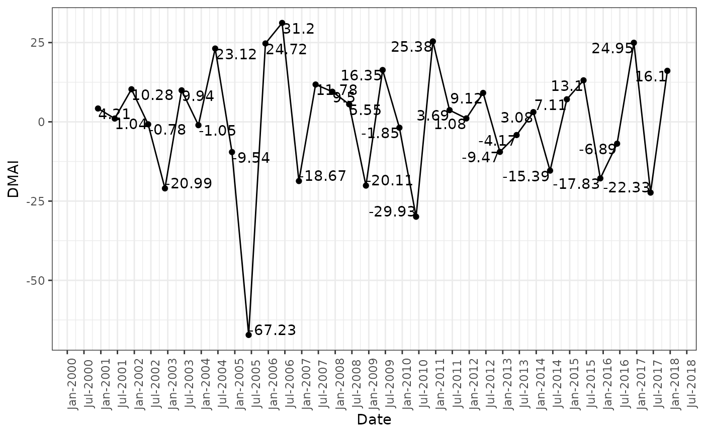
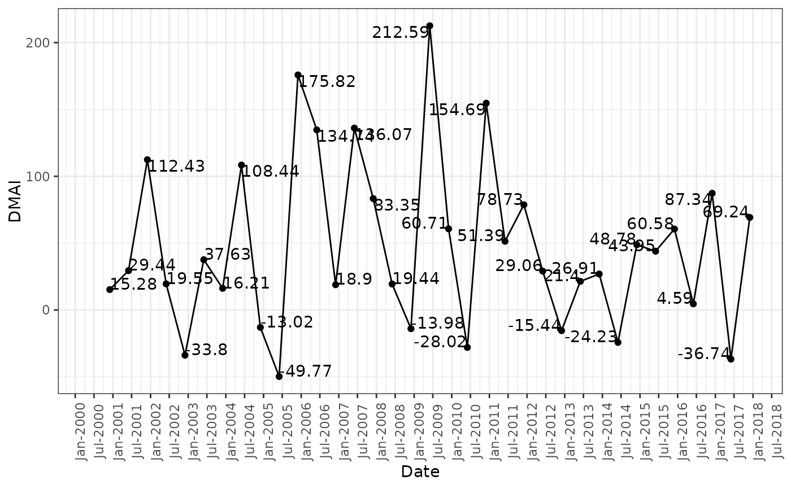

Calculates Divisia monetary aggregates index as given in Barnett, W. A. (1980).
# S3 method for default dmai(.data, method = c("Barnett", "Hancock"), logbase = 10)
| .data | data.frame |
|---|---|
| method | Method to calculate Divisia monetary aggregates index, Barnett or Hancock |
| logbase | base of the log to be used i.e 10 for log to the base 10 and exp(1) for natural log to be used |
Divisia Monetary Aggregates Index
Barnett, W. A. (1980). Economic Monetary Aggregates: An Application of Aggregation and Index Number Theory. Journal of Econometrics. 14(1):11-48. (https://www.sciencedirect.com/science/article/pii/0304407680900706)
Data <- tibble::tibble( Date = paste(c("Jun", "Dec"), rep(seq(from = 2000, to = 2017, by = 1), each = 2), sep = "-") , x1 = runif(n = 36, min = 162324, max = 2880189) , x2 = runif(n = 36, min = 2116, max = 14542) , x3 = runif(n = 36, min = 92989, max = 3019556) , x4 = runif(n = 36, min = 205155, max = 4088784) , x5 = runif(n = 36, min = 6082, max = 186686) , x6 = runif(n = 36, min = 11501, max = 50677) , x7 = runif(n = 36, min = 61888, max = 901419) , x8 = runif(n = 36, min = 13394, max = 347020) , x9 = runif(n = 36, min = 25722, max = 701887) , x10 = runif(n = 36, min = 6414, max = 37859) , x11 = runif(n = 36, min = 11688, max = 113865) , x12 = runif(n = 36, min = 2311, max = 23130) , x13 = runif(n = 36, min = 23955, max = 161318) , r1 = runif(n = 36, min = 0.00, max = 0.00) , r2 = runif(n = 36, min = 0.00, max = 0.00) , r3 = runif(n = 36, min = 0.00, max = 0.00) , r4 = runif(n = 36, min = 0.93, max = 7.43) , r5 = runif(n = 36, min = 1.12, max = 7.00) , r6 = runif(n = 36, min = 0.99, max = 7.93) , r7 = runif(n = 36, min = 1.51, max = 7.42) , r8 = runif(n = 36, min = 2.20, max = 9.15) , r9 = runif(n = 36, min = 2.64, max = 9.37) , r10 = runif(n = 36, min = 2.80, max = 11.34) , r11 = runif(n = 36, min = 3.01, max = 12.41) , r12 = runif(n = 36, min = 2.78, max = 13.68) , r13 = runif(n = 36, min = 3.23, max = 14.96) ) Data$Date <- as.Date(paste("01", Data$Date, sep = "-"), format = "%d-%b-%Y") Data#> # A tibble: 36 x 27 #> Date x1 x2 x3 x4 x5 x6 x7 x8 x9 #> <date> <dbl> <dbl> <dbl> <dbl> <dbl> <dbl> <dbl> <dbl> <dbl> #> 1 2000-06-01 2.12e6 12912. 1.18e6 1.18e6 3.26e4 18065. 3.36e5 2.42e4 3.68e5 #> 2 2000-12-01 2.54e6 13351. 1.08e6 1.04e6 1.79e5 27562. 5.11e5 1.00e5 3.76e5 #> 3 2001-06-01 2.23e6 9788. 2.34e5 2.57e6 1.85e5 19189. 5.87e5 3.06e5 5.03e5 #> 4 2001-12-01 2.57e6 3781. 1.90e6 1.69e6 9.57e4 21663. 2.05e5 2.96e5 5.88e5 #> 5 2002-06-01 1.40e6 11836. 2.91e6 3.14e6 1.72e5 49518. 1.54e5 1.90e4 6.69e4 #> 6 2002-12-01 6.15e5 7449. 2.01e6 1.68e6 7.33e4 43298. 1.52e5 7.47e4 2.53e5 #> 7 2003-06-01 1.05e6 13638. 1.59e6 3.29e6 1.55e5 25118. 1.40e5 5.20e4 5.68e5 #> 8 2003-12-01 1.55e6 11724. 5.32e5 3.72e6 1.07e5 48262. 5.11e5 1.73e5 2.17e5 #> 9 2004-06-01 2.14e6 5343. 2.64e6 4.03e6 1.50e5 17902. 8.14e5 3.30e5 5.77e5 #> 10 2004-12-01 2.85e6 6108. 1.60e6 2.49e6 6.97e4 17644. 6.58e5 2.89e5 1.71e5 #> # … with 26 more rows, and 17 more variables: x10 <dbl>, x11 <dbl>, x12 <dbl>, #> # x13 <dbl>, r1 <dbl>, r2 <dbl>, r3 <dbl>, r4 <dbl>, r5 <dbl>, r6 <dbl>, #> # r7 <dbl>, r8 <dbl>, r9 <dbl>, r10 <dbl>, r11 <dbl>, r12 <dbl>, r13 <dbl># Divisia monetary aggregates index using Barnett method DMAIBarnett <- dmai(.data = Data, method = "Barnett") DMAIBarnett#> # A tibble: 36 x 2 #> # Groups: Date [36] #> Date DMAI #> <date> <dbl> #> 1 2000-06-01 NA #> 2 2000-12-01 4.21 #> 3 2001-06-01 1.04 #> 4 2001-12-01 10.3 #> 5 2002-06-01 -0.777 #> 6 2002-12-01 -21.0 #> 7 2003-06-01 9.94 #> 8 2003-12-01 -1.05 #> 9 2004-06-01 23.1 #> 10 2004-12-01 -9.54 #> # … with 26 more rows# Divisia monetary aggregates index using Hancock method DMAIHancock <- dmai(.data = Data, method = "Hancock") DMAIHancock#> # A tibble: 36 x 2 #> # Groups: Date [36] #> Date DMAI #> <date> <dbl> #> 1 2000-06-01 NA #> 2 2000-12-01 15.3 #> 3 2001-06-01 29.4 #> 4 2001-12-01 112. #> 5 2002-06-01 19.5 #> 6 2002-12-01 -33.8 #> 7 2003-06-01 37.6 #> 8 2003-12-01 16.2 #> 9 2004-06-01 108. #> 10 2004-12-01 -13.0 #> # … with 26 more rowslibrary(ggplot2) ggplot(data = DMAIBarnett, mapping = aes(x = Date, y = DMAI)) + geom_point() + geom_line() + geom_text(aes(label = round(DMAI, 2)), vjust = "inward", hjust = "inward") + scale_x_date( date_breaks = "6 months" , date_labels = "%b-%Y" , limits = c(min(DMAIBarnett$Date), max = max(DMAIBarnett$Date))) + theme_bw() + theme(axis.text.x = element_text(angle = 90))#> Warning: Removed 1 rows containing missing values (geom_point).#> Warning: Removed 1 rows containing missing values (geom_path).#> Warning: Removed 1 rows containing missing values (geom_text).ggplot(data = DMAIHancock, mapping = aes(x = Date, y = DMAI)) + geom_point() + geom_line() + geom_text(aes(label = round(DMAI, 2)), vjust = "inward", hjust = "inward") + scale_x_date( date_breaks = "6 months" , date_labels = "%b-%Y" , limits = c(min(DMAIHancock$Date), max = max(DMAIHancock$Date))) + theme_bw() + theme(axis.text.x = element_text(angle = 90))#> Warning: Removed 1 rows containing missing values (geom_point).#> Warning: Removed 1 rows containing missing values (geom_path).#> Warning: Removed 1 rows containing missing values (geom_text).